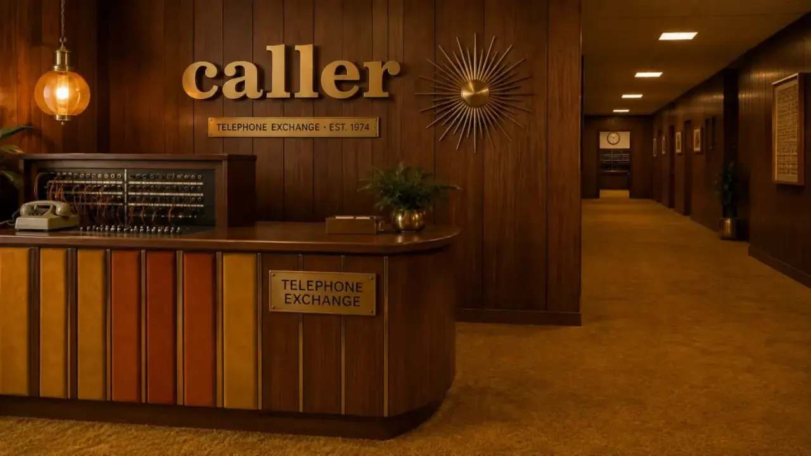
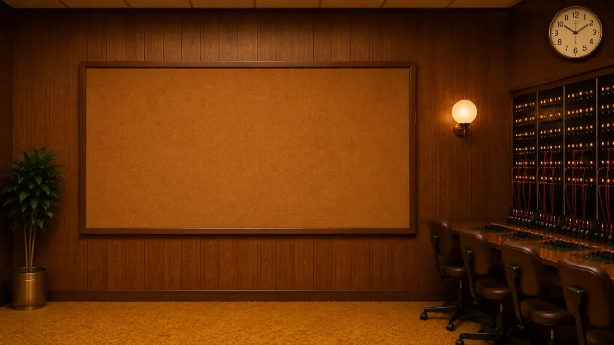
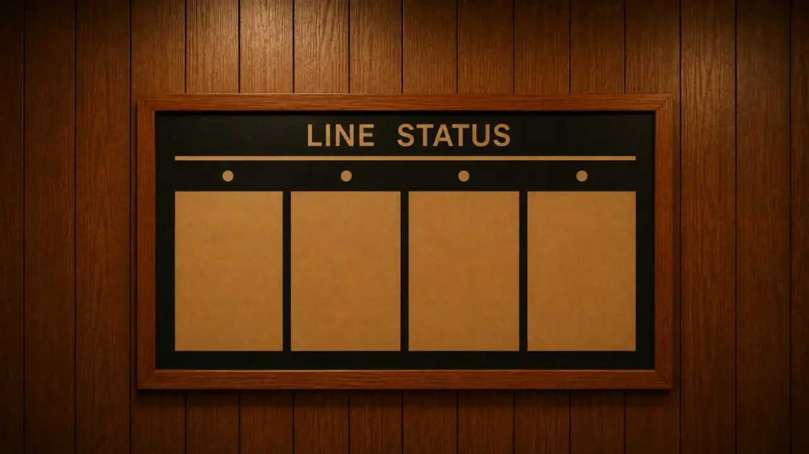
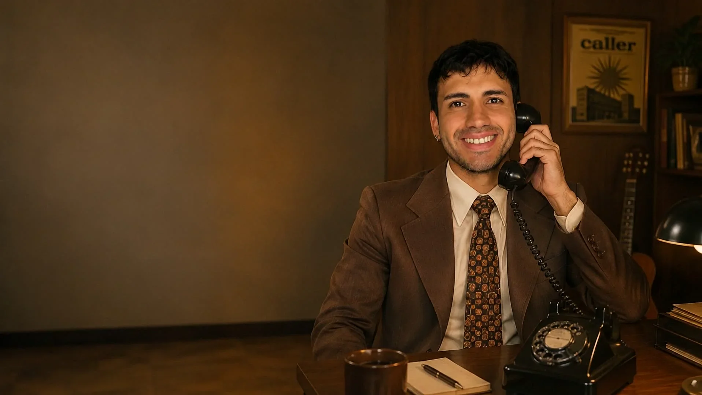
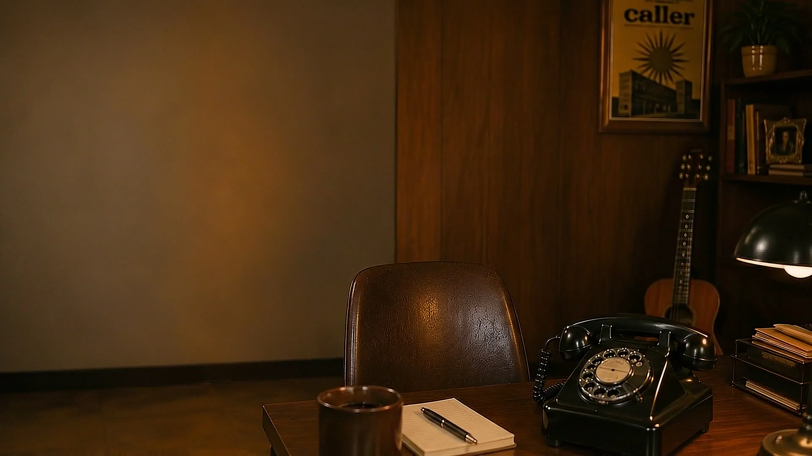

YOUR SIGNAL on the line

Challenge description...
Solution description...

Read your audience. Find what's losing you clients.
Turn that into a site that pushes one clear action.
Wire it to capture, respond and route — no backend needed.
Measure the response. Tune. Repeat.

I've spent five years building websites, online stores and digital products.
I make the design decisions and I write the code that ships — one person, start to finish.
Sometimes they come out just like you pictured.
Other times, not at all.
That's when it gets interesting.

I'm probably somewhere building something.
TURN YOUR PHONE
This broadcast is tuned for portrait.